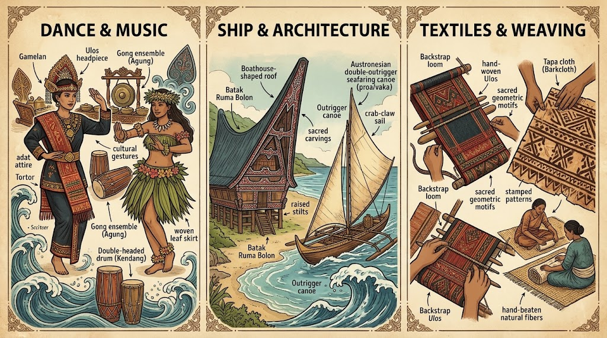

Shared Cultural Visuals
Below shows a side-by-side comparison of traditional attire across Maritime SE Asia and Polynesia.
Cultural Expressions Across the Ocean
Despite thousands of miles of open ocean separating islands today, Austronesian-speaking communities share deep-rooted cultural traits. From Sumatra to Hawaii, key traditions carry ancient technological and artistic markers.
Core Shared Traditions
- Linguistic Connections: Over 1,200 languages share common cognates.Scroll down below to see the table of language comparisons!
- Textile & Weaving Crafts: Similar geometric patterning appears across Batak Ulos, Indonesian Ikat, and Pacific Tapa cloth.
- Ship Architecture in Homes: Distinct curved roof profiles—such as the Batak Ruma Bolon—directly honor the shape of ancestral outrigger vessels.
- Dance & Music: Rhythmic storytelling through hand movements and drumbeats reflects shared oceanic oral histories.
